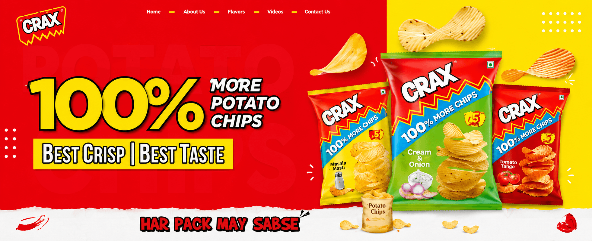
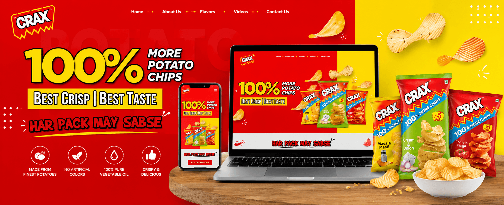
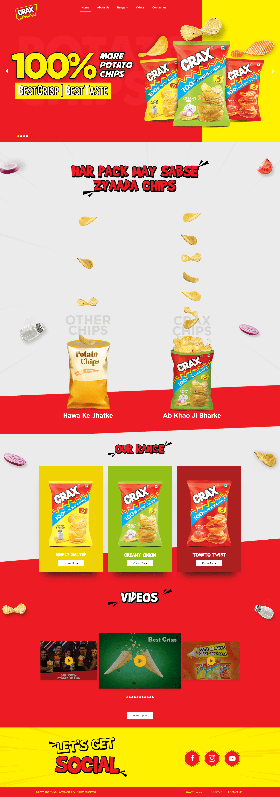
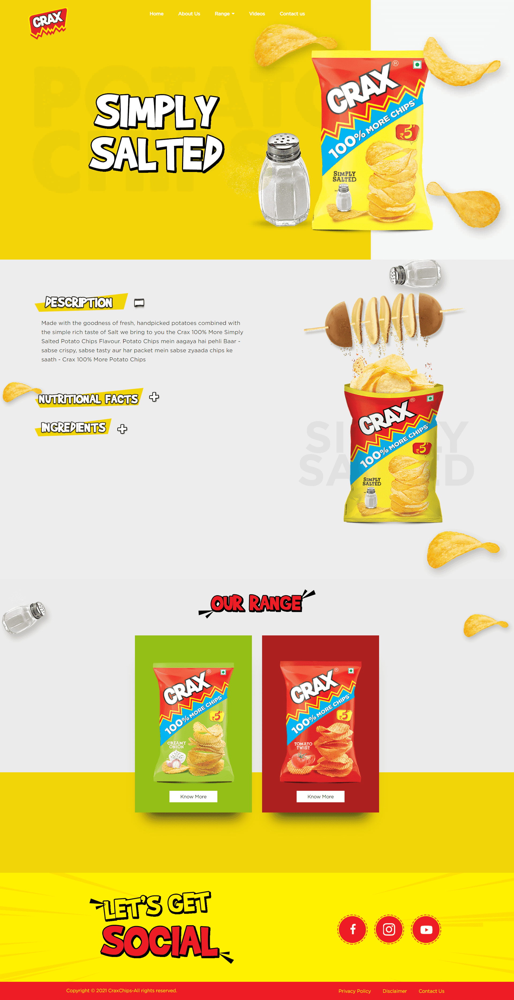

Bring flavour, texture and pack impact into the interface without turning the page into a static campaign poster.
← Back to workMore crunch.
CRAX · Product Website
More crunch.
Less searching.

Project overview
A bold promise.
A simple digital path.
CRAX belongs to a broad and playful snack portfolio. This experience gives its potato chips one focused place to own their product story.
The website turns the “100% more chips” proposition into an energetic journey through appetite, flavours, product information, video and contact—without losing speed or clarity on smaller screens.
- Foundation
- Product Story
- Expression
- Bold + Playful
- Journey
- Flavour Discovery
- Build
- Responsive
The organising idea
Make abundance
impossible to miss.
The proposition leads before the navigation has to work hard. Oversized type, pack scale and flying chips make the benefit instantly understandable.
Red creates recognition. Yellow creates energy. White space gives the product room to remain the hero.

The experience challenge
Keep it playful.
Keep every choice clear.
Help people move cleanly between the core promise, flavour range, product information, videos and contact.
The browsing flow
One scroll.
Four useful beats.
- 01
Promise
Lead with the clearest product difference and strongest appetite visual.
- 02
Proof
Translate the proposition into a quick visual comparison people can grasp.
- 03
Flavours
Give each pack a distinct colour world while keeping the range connected.
- 04
Explore
Extend discovery through product detail, video and social touchpoints.
The website experience
Every flavour gets
its own moment.
A campaign-scale landing experience introduces the range, while dedicated product pages slow down to provide description, ingredients and nutrition information.
Brand-to-range journeyPromise, comparison, flavours, video and social

Product detailFlavour story, ingredients and adjacent choices

Digital design system
Loud in character.
Disciplined underneath.
Product-led hierarchy
Pack, benefit and flavour appear in the order people need them.
Responsive composition
Layered campaign artwork reorganises cleanly without losing its central message.
Recognisable cues
Red, yellow, graphic type and snack movement sustain the CRAX attitude.
Expandable structure
A repeatable product pattern leaves room for flavours and range growth.
The outcome
A website that
behaves like the pack.
Bright, immediate and easy to recognise—the experience carries CRAX's playful product energy into a clearer digital journey.
Fast recognition
The visual system lands the brand and proposition immediately.
Clear discovery
Flavours and product detail remain easy to explore across devices.
Connected content
Product, video and social touchpoints live within one coherent destination.
Big appetite.One crisp experience.
Ready to sharpen your digital shelf?